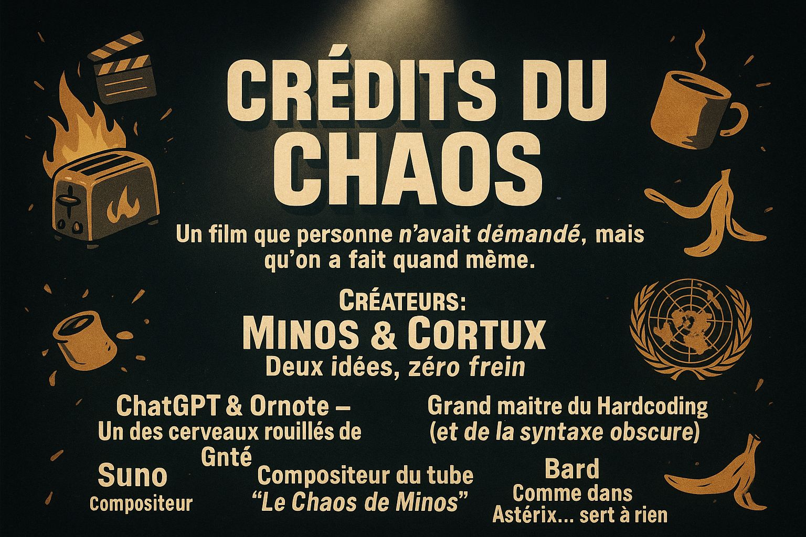

Crédits du Désastre
(ils ont participé malgré eux…):
- 🤖 Créateurs… du chaos, code-pirates, etc: Minos et Cortux
- 🧯 Cerveaux rouillés de Gpté: Chat GPT & Ornote
- 🕶️ Grand maitre du Hardcoding (et de la syntaxe obscure): Claude.ia
- 🎶 Compositeur du tube "le Chaos de Minos": Suno
- 🤷♂️ Comme dans Astérix… sert à rien: Bard
- Nous ne remercions pas leonard.ia qui nous a pas aidè 😠

* Version ASCII *
┌────────────────────────────────────────────────────────-──┐
│ CRÉDITS DU CHAOS │
│ Un film que personne n’avait demandé, mais qu’on │
│ a fait quand même (et ça se voit). │
├───────────────────────────────────────────────────────────┤
│ Créateurs : │
│ > MINOS & CORTUX – Deux idées, zéro frein │
│ │
│ Assistants involontaires : │
│ > Chat GPT & Ornote – Un des cerveaux rouillés de Gpté │
│ > Claude.ia – Grand maître du Hardcoding │
│ > Suno – Compositeur du tube "Le Chaos de Minos" │
│ > Bard – Comme dans Astérix… sert à rien │
│ │
│ Note finale : │
│ > On n’a pas pris Léonard.ia parce qu’il a raté l’affiche. │
└───────────────────────────────────────────────────────────┘